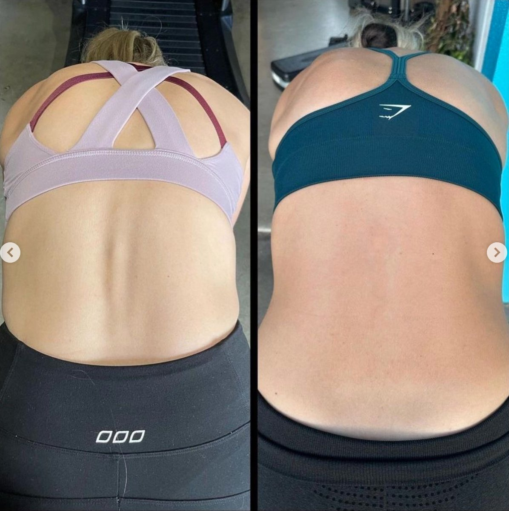
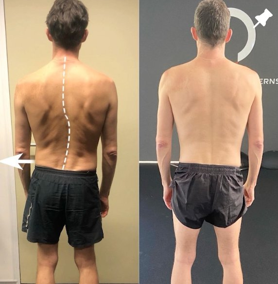
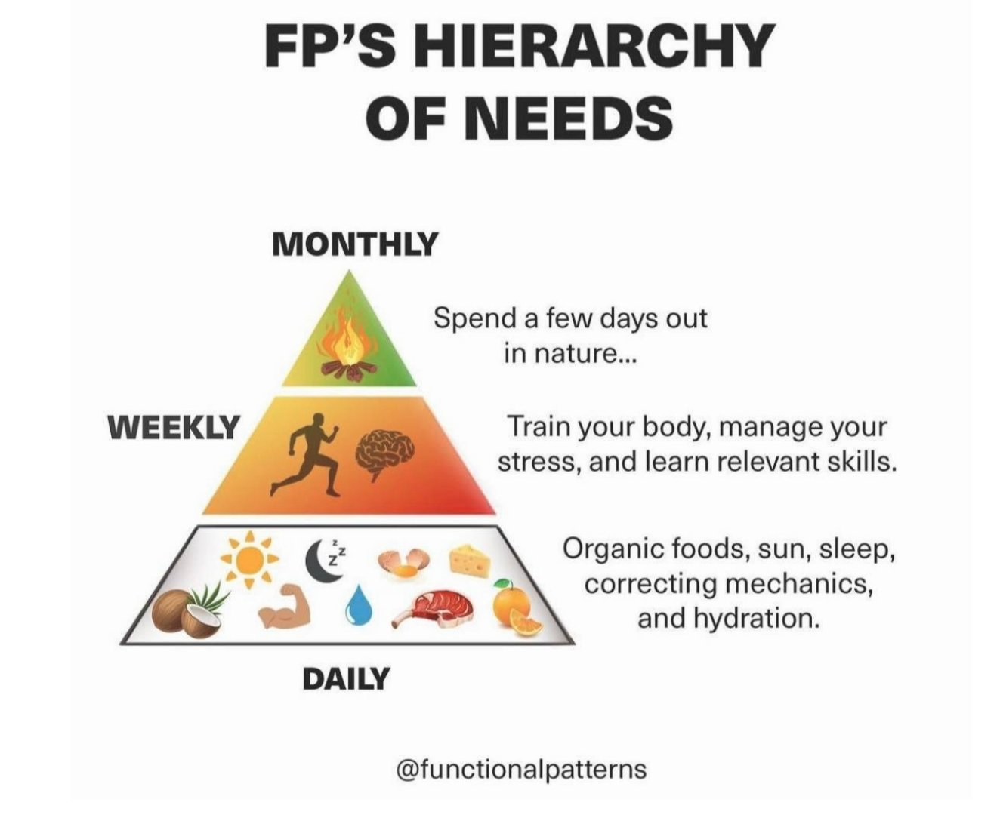

Scoliosis, a condition characterised by abnormal spinal curvature, can present unique challenges that affect posture, mobility, and overall well-being. While scoliosis can impact people of all ages, a biomechanics-focused perspective, along with the holistic approach of Functional Patterns methodology, offers promising insights into understanding and managing this condition.
In this blog, we'll delve into the world of scoliosis through a biomechanical lens, exploring how balanced movement patterns, muscle rebalancing, and load optimisation can contribute to improved spinal alignment and better quality of life.

Naturally Straightened Scoliosis with Functional Patterns
Understanding Scoliosis from a Biomechanics Perspective:
Scoliosis involves an abnormal curvature of the spine, disrupting the body's natural balance of forces. Biomechanically, this imbalance can lead to uneven weight distribution, altered movement patterns, and compromised stability. This misalignment affects the body's ability to move efficiently, impacting various daily activities.
The Impact of Imbalanced Muscles and Movement Patterns:
Muscle imbalances are a common feature of scoliosis. Biomechanically, these imbalances can lead to asymmetrical loading of the spine and surrounding structures.
This, in turn, affects how forces are transmitted through the body, potentially resulting in pain and discomfort. Functional Patterns methodology emphasises identifying and addressing these imbalances through specific exercises that promote balanced muscle activation using the gait cycle as a guide.

Naturally Straightened Scoliosis with Functional Patterns
Balanced Muscle Contraction for Scoliosis Correction:
Healthy muscle contraction is key to maintaining proper spinal alignment. Biomechanically, muscles provide tension that interacts with bones and connective tissues, creating a stable structure known as tensegrity. Correct muscle contraction ensures that forces are evenly distributed across the body, promoting optimal movement patterns.
Optimising Movement Patterns for Scoliosis Relief:
Functional Patterns methodology takes a holistic approach to scoliosis correction by focusing on movement patterns. By identifying movement dysfunctions and muscle imbalances, individuals can work to restore natural, balanced movement. This approach not only enhances spinal alignment but also improves overall functional stability.
Utilising gait analysis allows Functional Patterns Practitioners to identify root causes for scoliosis. For example, if you have a strong imbalance in the muscles supporting your spine when you move, this will be contributing to your scoliosis. Only gait/movement analysis can identify this.

Naturally Straightened Scoliosis with Functional Patterns
Hypermobility and Scoliosis:
Hypermobility, characterised by excessive joint flexibility, can contribute to the development of scoliosis. From a biomechanics perspective, hypermobile joints can lead to uneven load distribution and compromised stability. Functional Patterns methodology addresses hypermobility by guiding individuals to create stable muscle contractions that support joint integrity.
Fluid Dynamics and Scoliosis Relief:
Connective tissues, including fascia, play a crucial role in maintaining hydration within the body. From a biomechanical standpoint, compromised fascial health can impact fluid distribution, potentially leading to inefficient hydration and discomfort. By focusing on balanced movement patterns, Functional Patterns methodology supports better fluid dynamics within the body.
The key to enhancing fluid dynamics lies in creating a supportive biomechanical environment through balanced movement patterns. Functional Patterns methodology focuses on training the body to engage in movements that stimulate the proper flow of fluids within the fascia. By optimising posture, muscle activation, and movement sequences, individuals can foster a state of fluid balance that promotes tissue health and reduces discomfort.

Naturally Straightened Scoliosis with Functional Patterns
Enhancing Proprioception and Stability:
Proprioception, the body's awareness of movement and position, plays a pivotal role in managing scoliosis. Biomechanically, optimised proprioception helps individuals make precise movement adjustments to maintain balanced muscle activation and spinal alignment. Functional Patterns methodology incorporates exercises that enhance proprioceptive awareness for improved stability.
A Holistic Approach to Scoliosis Relief in Brisbane:
For those seeking natural scoliosis correction in Brisbane, Functional Patterns methodology offers a holistic solution. By addressing biomechanical imbalances, rebalancing muscles, and optimising movement patterns, individuals can work towards improved spinal alignment and reduced discomfort. This approach aligns with the goal of balanced, pain-free movement.
Functional Patterns focuses on your health holistically, never honing in on one thing or separating systems into symptoms. The method gets exceptional results by using a strong value system and implementing the correct order of operation in protocols.

Functional Patterns Protocol
Understanding scoliosis from a biomechanical perspective opens up new avenues for effective management. Functional Patterns methodology provides a holistic approach to scoliosis correction, focusing on balanced muscle activation, optimised movement patterns, and enhanced proprioception. By taking these principles to heart, individuals in Brisbane can embark on a journey towards better spinal alignment, improved well-being, and a life of more comfortable movement.